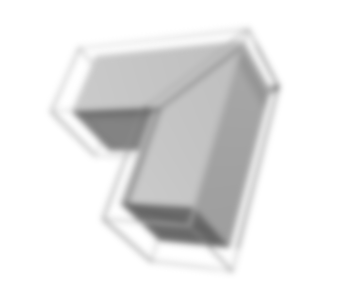

SMM
Аббревиатура smm образована от слов Social Media Marketing, что в дословном переводе означает маркетинг в социальных сетях. Это устоявшееся словосочетание, принятое во всем мире, но по смыслу больше подошло бы SMP (Social Media Promotion) или продвижение через социальные сети.
1) Кому нужен SMM-маркетинг
Нельзя считать smm-маркетинг панацеей для всех видов товара и групп покупателей. Принято различать сферы продаж по участвующим в них сторонам на B2B, B2C, C2C, где буква B обозначает бизнес, а С – конечного покупателя (consumer).
Поскольку активными участниками социальных сетей в подавляющем большинстве являются граждане, то сфера бизнес-бизнесу или B2B вряд ли окажется актуальной. Например, бесперспективной окажется страница, посвященная продукции машиностроения или металлопроката. Даже если созданием такой площадки займутся талантливые профессионалы, и она будет иметь тысячи активных подписчиков, это никак не отразится на объемах продажи товара, т.е. конечная цель не будет достигнута.
2) Пеимущества и недостатки
Smm-продвижение – это неоднозначный способ маркетинга, который может оказаться результативным или бесполезным решением для увеличения продаж товара. Его значение для бизнеса зависит от ряда факторов, таких как:
точное определение покупательской аудитории и ее интересов;
- Обозначение целевых клиентов сайта, а также общую миссию;
- правильный выбор методов продвижения;
- умение работать с аудиторий и внушать ей доверие;
- комплексное использование различных методик привлечения посетителей.
3) Кто такой SMM-менеджер
Работа по продвижению товара в социальных сетях требует профессионального подхода. В крупных компаниях существуют должности smm-менеджера или smm-маркетолога, обязанности которого заключаются в обслуживании площадок, созданных на различных платформах социальных сетей.
В качестве такого smm-менеджера могут работать специалисты по рекламе, журналисты, web-аналитики и другие сотрудники, обладающие креативным мышлением, опытом работы в социальных сетях и в сфере продаж. Специалист может сам заполнять страницы контентом или заниматься организацией этого процесса, заказывая материалы у профессиональных копирайтеров.
Для работы в этой сфере потребуются знания в сфере маркетинга, аналитики, IT и так далее.